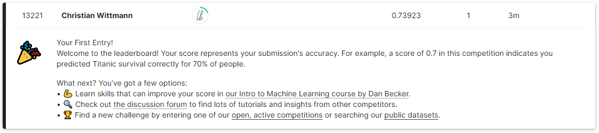
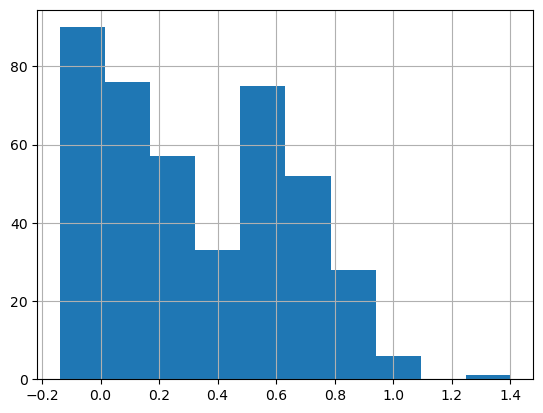
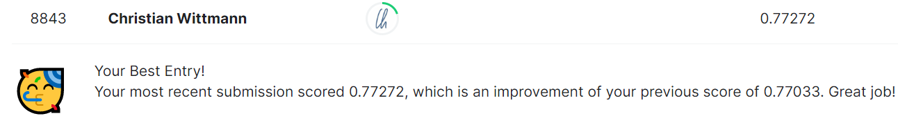

For more practical experience with gradient descent, I decided to participate in the Titanic Competition. Here is how I did it and what I learned.
I took the following approach:
Setting up my local machine for the Kaggle competition
Trying to write as little code as possible, I implemented notebook which leveraged a fast.ai tabular learner
Creating another notebook re-implementing Jeremy’s Excel-based model
Note: This blog post itself is a notebook, and it can be found here on GitHub.
Installing Kaggle
Getting ready for the Kaggle competition requires registering for the competition (a few clicks on the kaggle website), and installing kaggle on your local machine. The following is based on the Live-Coding Session 7 and the related official topic in the forums.
The first step is to install kaggle:
pip install --user kaggle
As a result, the following warning is displayed: The script kaggle is installed in '/home/<your user>/.local/bin' which is not on PATH. This means that the you need to add the path to the PATH-variable. This is done by adding the following line to the .bashrc-file and restarting the terminal:
PATH=~/.local/bin:$PATH
Note: To display the current PATH-variable use: echo $PATH
As a result, typing the kaggle-command on the command line works, but the next error shows up (as expected): OSError: Could not find kaggle.json. Make sure it's located in /home/chrwittm/.kaggle. Or use the environment method.
This means that you cannot authorize against the kaggle platform. To solve this, download your personal kaggle.json On the kaggle website, navigate to: “Account” and click on “Create New API Token”. As a result, the kaggle.json is downloaded.
Copy the kaggle.json-file into the .kaggle-directory in your home directory.
Typing the kaggle-command on the command line gives you the final clue as to what is missing: Your Kaggle API key is readable by other users on this system! To fix this, you can run 'chmod 600 /home/chrwittm/.kaggle/kaggle.json'
Therefore, type:
chmod 600 /home/<your user>/.kaggle/kaggle.json
Typing the kaggle-command on the command line again confirms: We are in business :)
Downloading the dataset
To download the dataset, run the following command (which you can also find on the kaggle website):
kaggle competitions download -c titanic
As a result, the file titanic.zip is downloaded.
To unzip type:
unzip titanic.zip
Doing this for the first time, this resulted in an error: /bin/bash: unzip: command not found
As a result, unzipping works, and we have a dataset to work with :).
import pandas as pdtrain = pd.read_csv("train.csv")train.head()
PassengerId
Survived
Pclass
Name
Sex
Age
SibSp
Parch
Ticket
Fare
Cabin
Embarked
0
1
0
3
Braund, Mr. Owen Harris
male
22.0
1
0
A/5 21171
7.2500
NaN
S
1
2
1
1
Cumings, Mrs. John Bradley (Florence Briggs Th...
female
38.0
1
0
PC 17599
71.2833
C85
C
2
3
1
3
Heikkinen, Miss. Laina
female
26.0
0
0
STON/O2. 3101282
7.9250
NaN
S
3
4
1
1
Futrelle, Mrs. Jacques Heath (Lily May Peel)
female
35.0
1
0
113803
53.1000
C123
S
4
5
0
3
Allen, Mr. William Henry
male
35.0
0
0
373450
8.0500
NaN
S
Implementing a Fast.ai Tabular Learner
The goal was not to create a perfect submission, but to simply train a model as fast as possible to
get a baseline
to get to know how a kaggle competition works (remember, this is my first one)
Therefore, I created a dataloaders as shown in lesson 1 or in the docs by sorting the variables into categorical or continuos one, excluding irrelevant ones).
Note 1: In this blog post, I am presenting the steps in a fast-forward way, here is the original notebook.
Note 2: When writing this up, I was not able to 100% re-produce the same results, but basically this is how the story went.
learn = tabular_learner(dls, metrics=accuracy)learn.fit_one_cycle(10) #change this variable for more/less training
epoch
train_loss
valid_loss
accuracy
time
0
0.548652
0.315984
0.640449
00:00
1
0.454461
0.325496
0.640449
00:00
2
0.373511
0.289948
0.640449
00:00
3
0.319270
0.251090
0.640449
00:00
4
0.280473
0.196879
0.640449
00:00
5
0.249269
0.173640
0.640449
00:00
6
0.225535
0.152192
0.640449
00:00
7
0.207350
0.141283
0.640449
00:00
8
0.192223
0.137462
0.640449
00:00
9
0.180697
0.137344
0.640449
00:00
With this learner, we can make the predictions on the test-dataset.
test = pd.read_csv("test.csv")# replacing null values with 0test['Fare'] = test['Fare'].fillna(0)# create Predictions as suggested here:# https://forums.fast.ai/t/tabular-learner-prediction-using-data-frame/90534/2test_dl = learn.dls.test_dl(test)preds, _ = learn.get_preds(dl=test_dl)test['Survived_pred'] = preds.squeeze()test.head()
PassengerId
Pclass
Name
Sex
Age
SibSp
Parch
Ticket
Fare
Cabin
Embarked
Survived_pred
0
892
3
Kelly, Mr. James
male
34.5
0
0
330911
7.8292
NaN
Q
0.064765
1
893
3
Wilkes, Mrs. James (Ellen Needs)
female
47.0
1
0
363272
7.0000
NaN
S
0.454887
2
894
2
Myles, Mr. Thomas Francis
male
62.0
0
0
240276
9.6875
NaN
Q
-0.025921
3
895
3
Wirz, Mr. Albert
male
27.0
0
0
315154
8.6625
NaN
S
-0.015690
4
896
3
Hirvonen, Mrs. Alexander (Helga E Lindqvist)
female
22.0
1
1
3101298
12.2875
NaN
S
0.508172
Interpreting the values in column Survived_pred is important, because we need to turn these values into 0 and 1 for the submission. The submission file should only have the columns PassengerId and Survived. For the first submission, I did not worry about it too much and simply picked a value 0.5. (Let’s come back to that a little later)
threshold =0.5#change this variable for more/less trainingtest['Survived'] = [ 1if element > threshold else0for element in preds.squeeze()]submission1 = test[['PassengerId', 'Survived']]submission1.to_csv('submission1.csv', index=False)
I uploaded the results, and they were better then random ;) - Score 0.73923

The score is not great, but the whole point was to get a baseline as quickly as possible, and to “play the whole kaggle game”. Actually, the fact that I produced this result in about 1-2 hours felt pretty good :).
Note: Running this notebook, I got a score of 0.75119, I am not sure, what caused the difference… but better is always good ;)
So how can we improve the score? More training, interpreting the results differently? As it turns out: Both.
Let’s look at the distribution of Survived_pred:
test.Survived_pred.hist();

As it turned out, setting my threshold to 0.6 created a better result: Score: 0.74162. (this I could not reproduce with this notebook while writing up the blog post)
Also more training, produced better results, running for 50 cycles, resulted in a lower loss and a better result. Training with 50 cycles and threshold 0.7, this was the result: Score: 0.76794 (with this notebook 0.77033)
So there is some randomness when training, and it is important to properly interpret the results. Getting about 77% right with this simple approach is not to bad.
Re-Implementing the Excel Model
After the quick win with Fast.AI, I decided to re-implement what Jeremy did in the Excel in video lecture 3 to predict the survivors. Let’s see how it performs against the Fast.AI tabular learner.
Since that involved quite a bit of code, let me simply link to notebook and discuss the learnings / results.
As it turned out:
I had to do a bit of data cleansing.
The feature engineering took some time which taught me some general python lessons.
The first model with just one layer scored 0.75837, even better than the my Fast.AI baseline, but not quite as good as the optimized version.
The next iteration with 2 and 3 layers scored better:
Score: 0.77033 (2-layers)
Score: 0.77272 (3-layers)

This was quite surprising: The self-written algorithm is better than the Fast.AI one, any ideas why that would be?
Nonetheless, it seems to hit a ceiling at 77%, and it would make sense to dive deeper into tabular data, but that is for another time. My goal was not to optimize the competition result, but to participate in my first kaggle competition, and to re-visit the topic of gradient descent and matrix multiplication. I will most likely return to this dataset/challenge in the future.